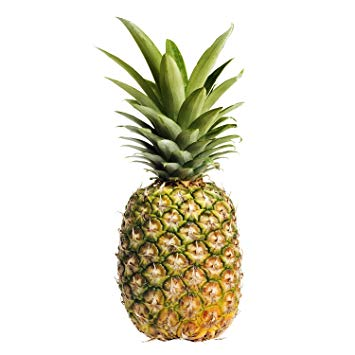
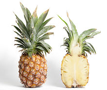

Let's it snow!!!
Pineapples are tropical fruit that are rich in vitamins, enzymes and antioxidents. They may help boost the immune system, build strong bones and aid indigestion. Also, despite their sweetness, pineapples are low in calories.
Pineapples are members of the bromeliad family, and one of the few bromeliads to produce edible fruit, according to the biology department at Union County College. The fruit is actually made of many individual berries that fuse together around a central core. Each pineapple scale is an individual berry.
 

Hi! I'm a pineapple.
Pineapple (Ananas comosus) is an incredibly delicious and healthy tropical fruit. It originated in South America, where early European explorers named it after its resemblance to a pinecone. This popular fruit is packed with nutrients, antioxidants and other helpful compounds, such as enzymes that can fight inflammation and disease. Pineapple and its compounds have been linked to many health benefits, including aiding digestion, boosting immunity and speeding up recovery from surgery, among others.